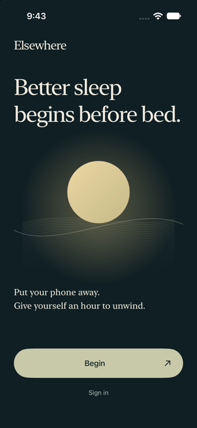
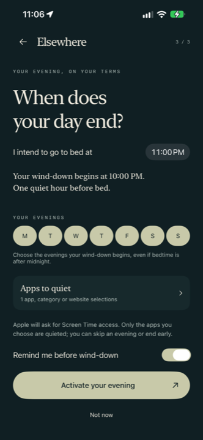
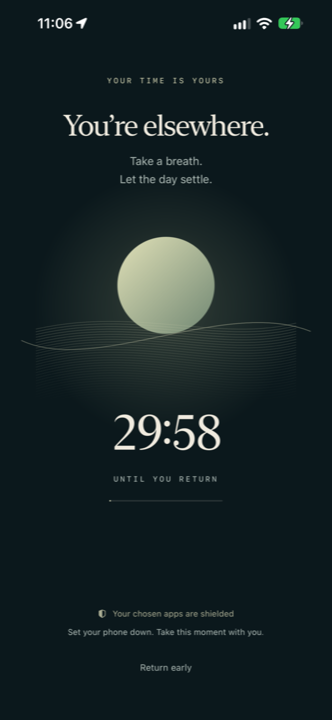
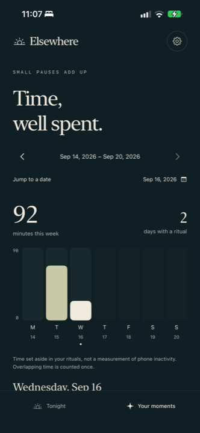

iPhone · Screen Time
Elsewhere quiets the apps that keep you up — at the hour you choose, every evening, without you having to win the argument with yourself at 11pm.
Why it exists
It’s that the decision to put the phone down has to be made at exactly the moment you are least equipped to make it — tired, a little wired, three taps into something that refreshes forever.
Researchers have a name for this: bedtime procrastination. Not a sleep problem, a self-regulation one. People who go to bed later than they meant to usually know perfectly well what they should do. The gap is in the doing, at the hour when doing is hardest.
Elsewhere moves the decision to daylight. You choose what to quiet and when, once, while you’re rested and clear-headed. Then every evening it arrives on its own — no notification to dismiss, no willpower required, no negotiating with yourself in the dark.
How it works
Apps, whole categories, or websites. Picked once, on your terms, in Apple’s own Screen Time picker.
A wind-down time and a bedtime. Elsewhere schedules the evenings you mark as active and leaves the rest alone.
At the hour you chose, the apps go quiet and a ritual begins. When it ends, everything comes back.
In the app
No streak shaming, no leaderboards, no badges for going to bed. An evening, an orb that breathes at the pace of a slow exhale, and a record of the time you kept for yourself.




What the research says
Elsewhere isn’t built on a hunch about screens. Three findings shape how it works.
In a controlled laboratory study, reading on a light-emitting device before bed suppressed melatonin, delayed circadian timing, lengthened the time it took to fall asleep, and left people less alert the next morning — compared with reading print under dim light.
Chang AM, Aeschbach D, Duffy JF, Czeisler CA. “Evening use of light-emitting eReaders negatively affects sleep, next-morning alertness, and next-day circadian timing.” PNAS, 2015.
Bedtime procrastination — going to bed later than intended without any external reason to — is linked to general difficulty with self-regulation rather than to not valuing sleep. Which is why advice to simply decide better tends not to work, and why removing the decision does.
Kroese FM, De Ridder DTD, Evers C, Adriaanse MA. “Bedtime procrastination: introducing a new area of procrastination.” Frontiers in Psychology, 2014.
Irregular sleep and wake times are associated with delayed circadian timing and worse outcomes, even in people getting a similar total amount of sleep. A wind-down that happens at the same hour is doing more work than it looks like it is.
Phillips AJK, Clerx WM, O’Brien CS, et al. “Irregular sleep/wake patterns are associated with poorer academic performance and delayed circadian and sleep/wake timing.” Scientific Reports, 2017.
Elsewhere is not a medical device and doesn’t diagnose or treat sleep disorders. It quiets apps at an hour you choose. If you’re dealing with persistent sleep trouble, that’s a conversation for a doctor.
Privacy
That’s not a policy promise — it’s how Apple’s Screen Time framework is built. When you pick apps to shield, Elsewhere receives an encrypted, opaque token, never the list itself.